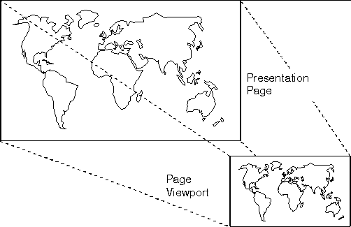

When an application associates a presentation space with a device context, a default device transformation is set. A page viewport is defined according to the rules in the following table:
┌──────────────────┬────────────────────┬──────────────────────┐ │Presentation-page │Page viewport size │Usage. │ │specification │ │ │ ├──────────────────┼────────────────────┼──────────────────────┤ │Pels │The same size as the│The lower-left corner │ │ │presentation page. │of the presentation │ │ │ │page maps to the │ │ │ │lower-left corner of │ │ │ │the device space. For │ │ │ │example, if an │ │ │ │application defines a │ │ │ │presentation page of │ │ │ │300 coordinates │ │ │ │(x-axis)-by-200 │ │ │ │coordinates (y-axis), │ │ │ │then the picture is │ │ │ │transformed to a │ │ │ │screen area of the │ │ │ │same size. │ ├──────────────────┼────────────────────┼──────────────────────┤ │Metric units │The coordinates that│The lower-left corner │ │ │produce the correct │of the presentation │ │ │matrix for the │page maps to the │ │ │physical spacing of │lower-left corner of │ │ │the pels. │the device space. │ ├──────────────────┼────────────────────┼──────────────────────┤ │Arbitrary units │The default size for│The page viewport is │ │ │the device is used. │constructed such that │ │ │For a plotter or │the presentation-page │ │ │printer, this is the│coordinates give equal│ │ │maximum accessible │x- and y-spacing. The │ │ │area of the paper, │lower-left corner of │ │ │and for a screen, it│the presentation page │ │ │is the maximized │maps to the lower-left│ │ │window size. │corner of the device │ │ │ │space, and either the │ │ │ │right or the top edges│ │ │ │map, such that the │ │ │ │picture is contained │ │ │ │within the device │ │ │ │rectangle and its │ │ │ │aspect ratio is │ │ │ │preserved. │ └──────────────────┴────────────────────┴──────────────────────┘The following figure shows mapping from the presentation page to the device.
The device transformation can be explicitly specified using GpiSetPageViewport. 
Mapping a Picture from the Presentation Page to the Device
In this example, a map of the world has been drawn in a presentation page, defined in arbitrary units, that is much larger than the device space. The device transformation scales the picture to fit the maximized window size and preserves its aspect ratio.